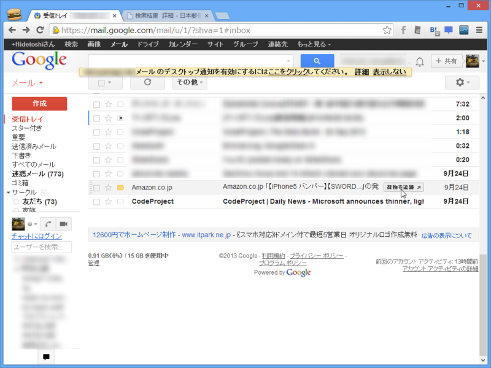
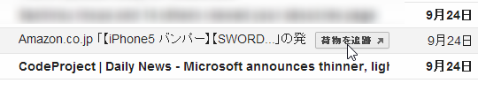
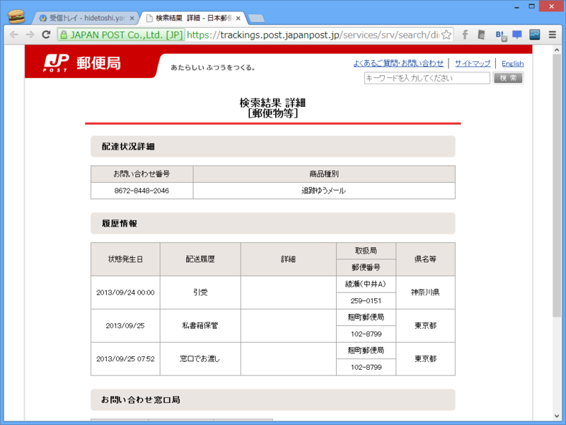
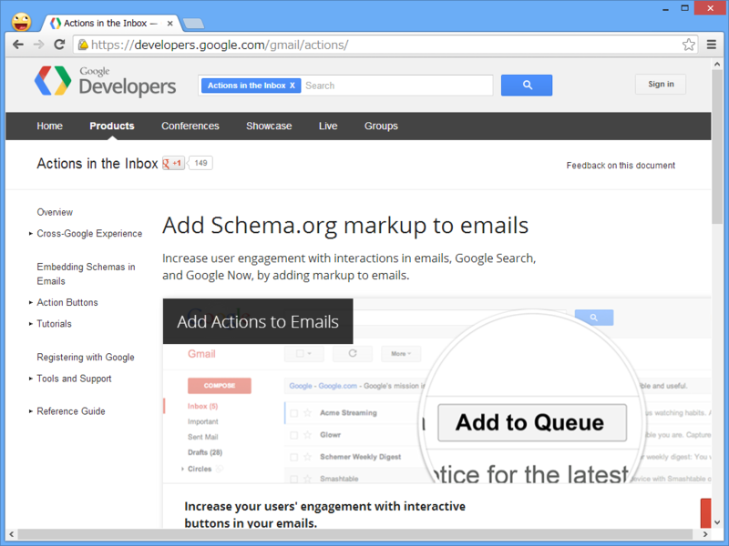

Gmail : Amazon からの商品配送を追跡できる神機能
公開日：

さきほど何気なく Gmail のチェックをしていたら、こんなボタンがついていることに気づいた。

これを押すと――

荷物の追跡が行える。
ちょっとびっくりしたけど、これはだいぶ前（先月ぐらい？）に追加された機能みたい。こちらでは Internet Explorer 10、Mozilla Firefox 24、Google Chrome 29での動作を確認している。
- GMailでアマゾンの発送通知で「荷物を追跡」ボタンが表示されるって話 - 段ボール箱の中身
- 朝山貴生 - Google+ - すげぇ、Gmailのメール一覧でAmazonからの発送通知メールを開かずに、直接荷物の追跡へ行けるようになってる・・・…
メールにマークアップを含めることで、受信トレイ内にアクションが追加できるとの吉。

ただ、最近は iPhone でチェックしてしまうから気が付かないんだよなぁ。